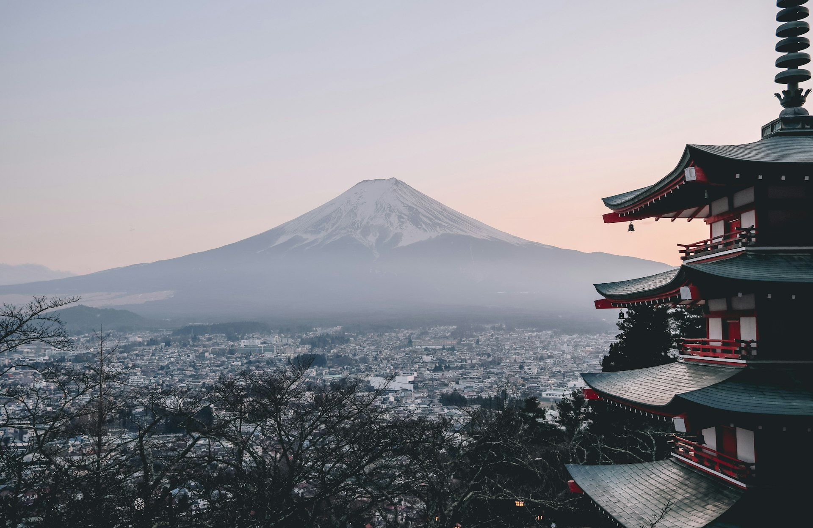

Pillar I — Regional Revitalization
国立／国定公園での民間活力導入による地域活性化
Regional Revitalization
阿寒摩周国立公園ビジターセンター内に民間運営によるコンシェルジュカフェを開設・運営。収益の一部を地元の自然環境保護・保全費用に還元する地域循環型マネタイズスキームの確立を目指す先進事例を提案しています。
全国各地の国立公園・国定公園での民間活力導入支援として、好循環でサスティナブルな観光のための取り組みを推進しています。
日本の自然を生かした産学官連携でのプロジェクト支援・コーディネートを行なっております。日本みどりのプロジェクト推進協議会の事務局メンバーとして、行政と連携した都市部における緑のショーケースづくりにも取り組んでいます。
Track Record
阿寒摩周湖国立公園における先進的な民間活用事例づくり、
魅力あるアクティビティ・名産品の開発
| 2019年9月 | 環境省より川湯エコミュージアム（川湯ビジターセンター）のカフェエリアを『National Park Style Cafe』として運営する協定を締結。国有公園施設を民間が家賃を支払って運営する民間自走型の運営形式でカフェをオープン。 |
| 2019年 | 当団体グループ会社のナショナルパークツーリズム弟子屈が、阿寒摩周国立公園での地域旅行業・ガイド業の功績により環境大臣賞を受賞。弟子屈町にて高円宮妃殿下ご臨席の下、表彰式が行われました。 |
| 2020年10月 | 環境省主催「川湯の森ナイトミュージアム」に合わせ、ビジターセンター内でのアルコール飲料提供として日本初となる【National Park Style Café＆BAR】をオープン。地ビール【摩周湖ビール】【屈斜路湖ビール】のテスト試作品を開発・販売。全国6つの国立公園の特産酒も展開。 関連リリースはこちら → |